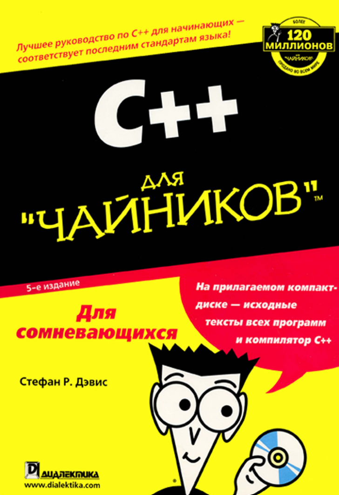
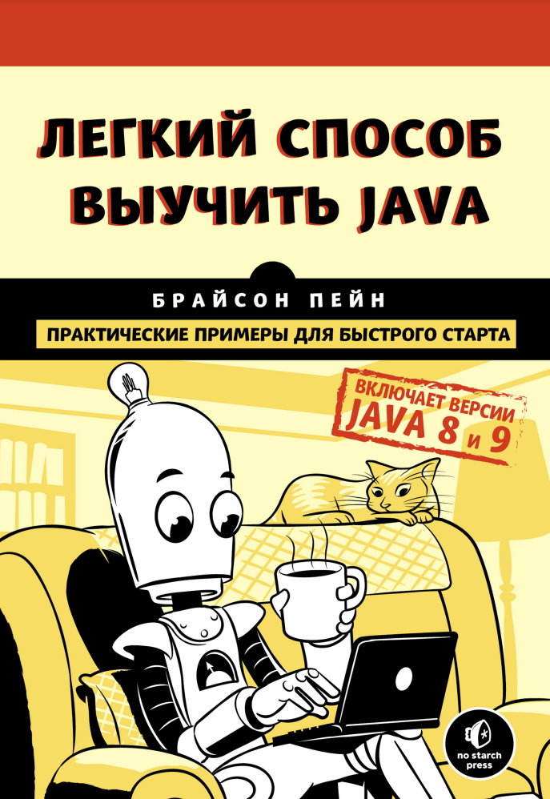
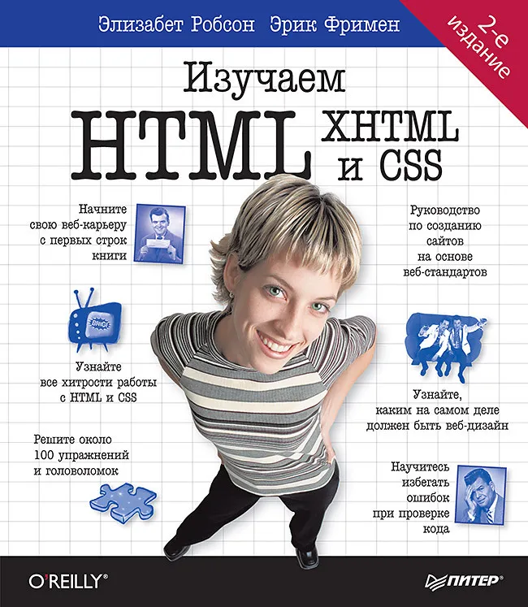
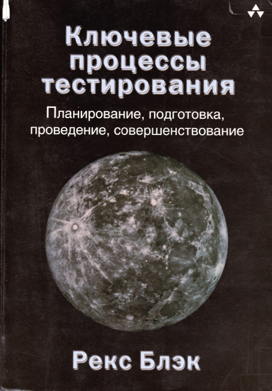

-

JavaScript: сильные стороны
Дуглас Крокфорд -

Язык программирования C
Брайан У. Керниган & Деннис М. Ритчи -

Алгоритмы. Справочник. С примерами на C, C++, Java и Python
Джордж Хайнеман & Гэри Поллис & Стэнли Селков -

C++ для чайников
Дэвис Стефан Рэнди -

Программирование на С для начинающих
Майк МакГрат -

Самоучитель C/C++ и C++ Builder 2007
Пахомов Б.И. -

Безопасное программирование на C и C++
Сикорд Роберт -

Управление электронными устройствами на C++
Янта Катупития, Ким Бентли -

Unity и C#. Геймдев от идеи до реализации
Джереми Гибсон Бонд -

Unity в действии. Мультиплатформенная разработка на C#
Джозеф Хокинг -

С# на примерах
Евдокимов П.В. -

С#
Карли Ватсон -

Изучаем C#
Эндрю Стиллмен & Дженнифер Грин -

Легкий способ выучить Java
Брайсон Пэйн -

Java: руководство для начинающих
Герберт Шилдт -

Java. Эффективное программирование
Джошуа Блох -

Java за 24 часа. Руководство. 8-е издание
Кейденхед Роджерс -

Java. Библиотека профессионала Том 1 Основы
Хорстманн Кей -

Новая большая книга CSS
Макфарланд Дэвид -

CSS: полный справочник
Эрик А. Мейер, Эстелл Уэйл -

CSS для профи
Кит Грант -

HTML5: карманный справочник
Роббинс Дженнифер Нидерст -

Изучаем HTML, XHTML и CSS
Робсон Элизабет, Фримен Эрик -

Создаем динамические веб-сайты с помощью PHP, MySQL, javascript, CSS и HTML5
Робин Никсон -

Как устроен JavaScript
Д. Крокфорд -

Javascript и jQuery. Разработка и дизайн веб-сайтов
Джон Дакетт -

JavaScript Подробное руководство
Дэвид Флэнаган -

JavaScript для чайников
Минник, Холланд -

JavaScript для детей
Ник Морган -

JavaScript. Шаблоны
С. Стефанов -

Изучаем программирование на JavaScript
Фримен, Робсон -

Изучаем PHP 7. Руководство по созданию интерактивных веб-сайтов
Дэвид Скляр -

Разработка web - приложений на РНР и MySQL
Лаура Томсон & Люк Веллинг -

Объектно-ориентированное программирование на PHP
Максим Кузнецов & Игорь Симдянов -

PHP. Рецепты программирования
Скляр Д. & Трахтенберг А. -

Прикладной анализ текстовых данных на Python. Машинное обучение и создание приложений
Бенджамин Бенгфорт, Ребекка Билбро, Тони Охеда -

Простой Python. Современный стиль программирования
Билл Любанович -

Секреты Python 59 рекомендаций по написанию эффективного кода
Бретт Слаткин -

Вандер Плас Дж. – Python для сложных задач наука о данных и машинное обучение
Вандер Плас Дж. -

Изучаем программирование на Python
Пол Бэрри -

Автоматизация рутинных задач с помощью Python. практическое руководство для начинающих
Эл Свейгарт -

Эмоциональный веб-дизайн
Аарон Уолтер -

Дизайн для реального мира
Виктор Папанек -

Основы контентной стратегии
Эрин Киссейн -

Отзывчивый веб-дизайн
Итан Маркотт -

Дизайнь. Современный креатифф
Хизер Бредли -

Сначала мобильные
Люк Вроблевски -

Гибкое тестирование. Практическое руководство для тестировщиков ПО и гибких команд
Лайза Криспин, Джанет Грегори -

Ключевые процессы тестирования
Рекс Блэк -

Тестирование DOT COM или Пособие по жестокому обращению с багами в интернет- стартапах
Савин Роман -

Тестирование черного ящика. Технологии функционального тестирования программного обеспечения и систем
Борис Бейзер -

Тестирование программного обеспечения. Базовый курс
Святослав Куликов -

Тестирование программного обеспечения. Фундаментальные концепции менеджмента бизнес-приложений
Сэм Канер, Джек Фолк, Енг Кек Нгуен
HTML/CSS:
-
Новая большая книга CSS
Макфарланд Дэвид -
CSS: полный справочник
Эрик А. Мейер, Эстелл Уэйл -
CSS для профи
Кит Грант -
HTML5: карманный справочник
Роббинс Дженнифер Нидерст -
Изучаем HTML, XHTML и CSS
Робсон Элизабет, Фримен Эрик -
Создаем динамические веб-сайты с помощью PHP, MySQL, javascript, CSS и HTML5
Робин Никсон
Веб-дизайн:
Тестирование (qa):
-
Гибкое тестирование. Практическое руководство для тестировщиков ПО и гибких команд
Лайза Криспин, Джанет Грегори -
Ключевые процессы тестирования
Рекс Блэк -
Тестирование DOT COM или Пособие по жестокому обращению с багами в интернет- стартапах
Савин Роман -
Тестирование черного ящика. Технологии функционального тестирования программного обеспечения и систем
Борис Бейзер -
Тестирование программного обеспечения. Базовый курс
Святослав Куликов -
Тестирование программного обеспечения. Фундаментальные концепции менеджмента бизнес-приложений
Сэм Канер, Джек Фолк, Енг Кек Нгуен